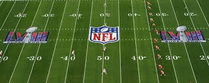
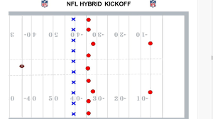

Basic Rules of Kickoff
- The ball is kicked off of a tee from the kicking team's own 40 yard line
- Everyone on the kicking team must stay behind that line until it is kicked
- The ball cannot be touched by the kicking team until it has gone ten yards
- The return team is spread out across the rest of the field, but the anyone on the front return line must be 10 yards away


Punting
A unique thing with punting is that the defense can block the punt, which gives a huge advantage and great field position. If the defense is lucky enough, they can return the blocked punt for more yards or a touchdown.
Some extra things to note about Punting:
- The defense can not touch the long snapper until he puts his head up after snapping the ball
- Some schools can use Rugby style punts, in which there are no protectors in front of the punter
- Punts can be faked, where the punter or another player runs or throws the ball to keep the drive going
Field Goals/Extra points
Field goals are used when the offense cannot progress without the risk of turning the ball over. Extra points are used after touchdowns.
Basics of field goals/extra points:
- 9 players are on the line, with the other two players, being the holder and the kicker, are behind them
- Once the ball is snapped, the holder will catch and hold the ball for the kicker to kick the ball
- If the holder can't get the ball ready for the kicker, they will have to run the ball
- Just like in punting, the defense can block the kick
- The ball is kicked through a goalpost. It is considered "good" if it goes through, and "no good" if it misses or is blocked